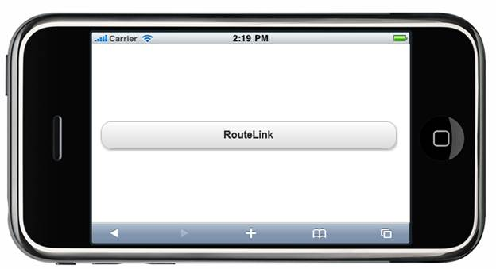

In the Getting Started section, we discussed how to create an Mobile MVC application and add the Tools package to the application. This section guides you to add the ActionLink Button control to an application.
1. In the view, invoke the RouteLink Button helper with the text of the button as the first argument.
|
[ASPX] <% = Html.MobSyncfusion().RouteLink("RouteLink", "Button").AutoFormat(MobSkins.Spinach)%>
[Razor] @{ Html.MobSyncfusion().RouteLink("RouteLink", "Button").AutoFormat(MobSkins.Spinach) . Render(); } |
2. Run the application.
The output is shown in the following screenshot.

Figure 217: RouteLink Button Sample
A sample that demonstrates a basic RouteLink Button control
can be downloaded from the following links.
 Note: The
version number for the assemblies has been set to 10.104.0.43 in the
Web.config file of the attached sample. Change the version number to the
appropriate version in the Web-2008.config or Web-2010.config
files (available in the root directory) and they will automatically be updated
in the Web.config file.
Note: The
version number for the assemblies has been set to 10.104.0.43 in the
Web.config file of the attached sample. Change the version number to the
appropriate version in the Web-2008.config or Web-2010.config
files (available in the root directory) and they will automatically be updated
in the Web.config file.